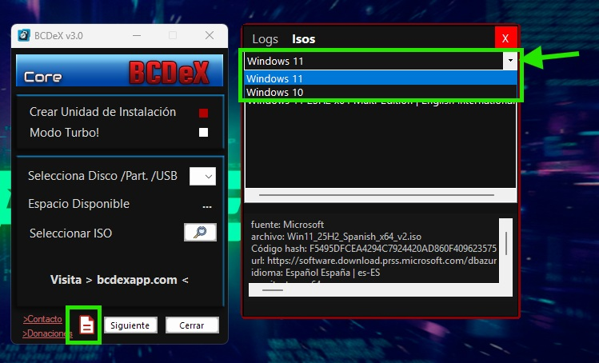
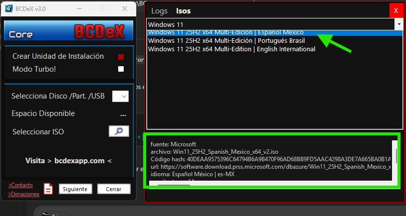
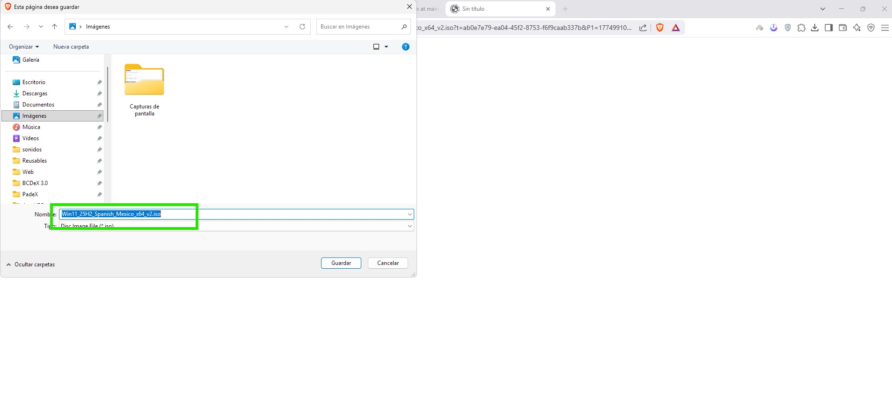

Guía de la pestaña ISOs
Esta página explica cómo funciona la pestaña ISOs dentro del panel de Logs de BCDeX, cómo se alimenta desde el catálogo y qué información muestra cada entrada antes de abrir la descarga.
Qué hace la app
- Carga las categorías disponibles desde
catalogo.json. - Muestra la lista principal de ISOs según la categoría elegida.
- Al seleccionar una ISO, presenta debajo sus detalles en el mismo orden definido en el catálogo.
- Con doble clic sobre una entrada, abre el navegador con la URL de descarga de esa imagen.


Cómo usar la pestaña
- Elige una categoría como Windows 11, Windows 10 u otras que se añadan en el futuro.
- Haz clic una vez sobre una ISO para ver sus datos completos.
- BCDeX respeta el orden de los campos tal como están escritos en el catálogo.
- Eso permite controlar desde el propio JSON cómo se presenta la información al usuario.
Estado actual de las descargas
En el estado actual del catálogo, los enlaces publicados apuntan a ISOs oficiales de Microsoft.
- No se usan servidores de descarga externos para esas entradas oficiales.
- No se comparten ISOs manipuladas en esas entradas oficiales.
- La descarga se abre desde la URL indicada en el propio catálogo.
- Si en el futuro se añaden builds modificadas, la fuente debe quedar indicada de forma explícita.

Estructura de catalogo.json
El archivo se organiza por categorías. Cada categoría contiene una lista de ISOs con su información técnica y la URL de descarga.
{
"version": 1,
"categorias": [
{
"nombre": "Windows 11",
"isos": [
{
"nombre": "Windows 11 25H2 x64 Multi-Edición | Español España",
"fuente": "Microsoft",
"archivo": "Win11_25H2_Spanish_x64_v2.iso",
"Codigo hash": "...",
"url": "https://...",
"idioma": "Español España | es-ES",
"arquitectura": "x64",
"tamano": "7.6 GB",
"edicion": "Multiedición"
}
]
}
]
}Campos importantes de cada ISO
- nombre: título principal visible en la lista.
- fuente: origen de la ISO, por ejemplo Microsoft.
- archivo: nombre real del fichero ISO.
- Código hash: sirve para verificar integridad.
- url: enlace que BCDeX abre al hacer doble clic.
- idioma: variante regional de la imagen.
- arquitectura: x64, x86 o ARM64.
- edición: Pro, Home, LTSC o Multiedición.
Qué gana el usuario con esta pestaña
BCDeX centraliza acceso rápido a imágenes oficiales, muestra detalles técnicos antes de abrir la descarga y deja claro cuándo una entrada es oficial y cuándo podría tratarse de una build modificada. Eso reduce fricción y da más contexto antes de descargar.